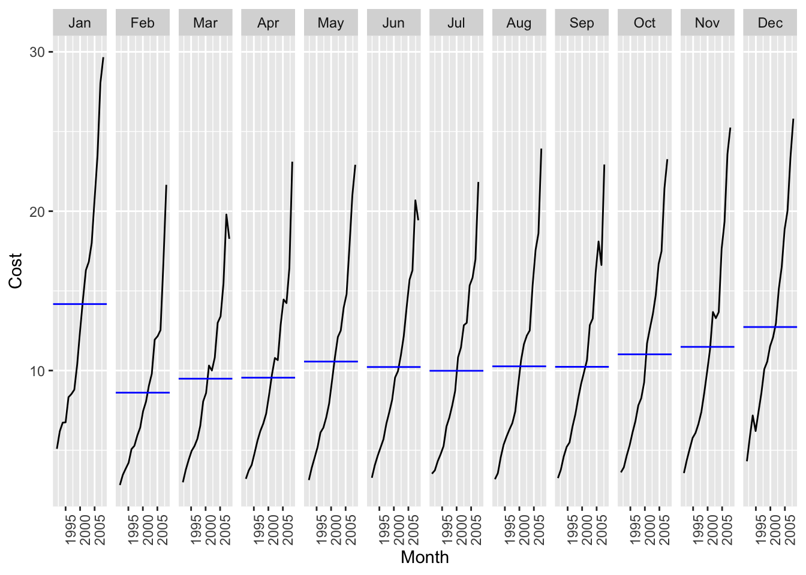

library(fpp3)2 Time Series Graphics
2.1 tsibble objects
olympic_running# A tsibble: 312 x 4 [4Y]
# Key: Length, Sex [14]
Year Length Sex Time
<int> <int> <chr> <dbl>
1 1896 100 men 12
2 1900 100 men 11
3 1904 100 men 11
4 1908 100 men 10.8
5 1912 100 men 10.8
6 1916 100 men NA
7 1920 100 men 10.8
8 1924 100 men 10.6
9 1928 100 men 10.8
10 1932 100 men 10.3
# ℹ 302 more rows[4Y]=> Its a every four year data- There are 14 time series based on the
LengthandSexvariable.
PBS# A tsibble: 67,596 x 9 [1M]
# Key: Concession, Type, ATC1, ATC2 [336]
Month Concession Type ATC1 ATC1_desc ATC2 ATC2_desc Scripts Cost
<mth> <chr> <chr> <chr> <chr> <chr> <chr> <dbl> <dbl>
1 1991 Jul Concessional Co-payme… A Alimenta… A01 STOMATOL… 18228 67877
2 1991 Aug Concessional Co-payme… A Alimenta… A01 STOMATOL… 15327 57011
3 1991 Sep Concessional Co-payme… A Alimenta… A01 STOMATOL… 14775 55020
4 1991 Oct Concessional Co-payme… A Alimenta… A01 STOMATOL… 15380 57222
5 1991 Nov Concessional Co-payme… A Alimenta… A01 STOMATOL… 14371 52120
6 1991 Dec Concessional Co-payme… A Alimenta… A01 STOMATOL… 15028 54299
7 1992 Jan Concessional Co-payme… A Alimenta… A01 STOMATOL… 11040 39753
8 1992 Feb Concessional Co-payme… A Alimenta… A01 STOMATOL… 15165 54405
9 1992 Mar Concessional Co-payme… A Alimenta… A01 STOMATOL… 16898 61108
10 1992 Apr Concessional Co-payme… A Alimenta… A01 STOMATOL… 18141 65356
# ℹ 67,586 more rowsPBS %>%
filter(ATC2 == 'A10') %>%
select(Month, Concession, Type, Cost)# A tsibble: 816 x 4 [1M]
# Key: Concession, Type [4]
Month Concession Type Cost
<mth> <chr> <chr> <dbl>
1 1991 Jul Concessional Co-payments 2092878
2 1991 Aug Concessional Co-payments 1795733
3 1991 Sep Concessional Co-payments 1777231
4 1991 Oct Concessional Co-payments 1848507
5 1991 Nov Concessional Co-payments 1686458
6 1991 Dec Concessional Co-payments 1843079
7 1992 Jan Concessional Co-payments 1564702
8 1992 Feb Concessional Co-payments 1732508
9 1992 Mar Concessional Co-payments 2046102
10 1992 Apr Concessional Co-payments 2225977
# ℹ 806 more rowsNote that the index variable
Month, and the keysConcessionandType, would be returned even if they were not explicitly selected as they are required for a tsibble (to ensure each row contains a unique combination of keys and index).
PBS %>%
filter(ATC2 == 'A10') %>%
select(Month, Concession, Type, Cost) %>%
summarize(total = sum(Cost))# A tsibble: 204 x 2 [1M]
Month total
<mth> <dbl>
1 1991 Jul 3526591
2 1991 Aug 3180891
3 1991 Sep 3252221
4 1991 Oct 3611003
5 1991 Nov 3565869
6 1991 Dec 4306371
7 1992 Jan 5088335
8 1992 Feb 2814520
9 1992 Mar 2985811
10 1992 Apr 3204780
# ℹ 194 more rowsPBS %>%
filter(ATC2 == 'A10') %>%
select(Month, Concession, Type, Cost) %>%
summarize(total = sum(Cost)) %>%
mutate(Cost = total / 1e6) -> a102.1.1 Read a csv file and convert it to a tsibble
prison <- readr::read_csv("https://OTexts.com/fpp3/extrafiles/prison_population.csv")
head(prison)# A tibble: 6 × 6
Date State Gender Legal Indigenous Count
<date> <chr> <chr> <chr> <chr> <dbl>
1 2005-03-01 ACT Female Remanded ATSI 0
2 2005-03-01 ACT Female Remanded Non-ATSI 2
3 2005-03-01 ACT Female Sentenced ATSI 0
4 2005-03-01 ACT Female Sentenced Non-ATSI 5
5 2005-03-01 ACT Male Remanded ATSI 7
6 2005-03-01 ACT Male Remanded Non-ATSI 58unique(prison$Date) [1] "2005-03-01" "2005-06-01" "2005-09-01" "2005-12-01" "2006-03-01"
[6] "2006-06-01" "2006-09-01" "2006-12-01" "2007-03-01" "2007-06-01"
[11] "2007-09-01" "2007-12-01" "2008-03-01" "2008-06-01" "2008-09-01"
[16] "2008-12-01" "2009-03-01" "2009-06-01" "2009-09-01" "2009-12-01"
[21] "2010-03-01" "2010-06-01" "2010-09-01" "2010-12-01" "2011-03-01"
[26] "2011-06-01" "2011-09-01" "2011-12-01" "2012-03-01" "2012-06-01"
[31] "2012-09-01" "2012-12-01" "2013-03-01" "2013-06-01" "2013-09-01"
[36] "2013-12-01" "2014-03-01" "2014-06-01" "2014-09-01" "2014-12-01"
[41] "2015-03-01" "2015-06-01" "2015-09-01" "2015-12-01" "2016-03-01"
[46] "2016-06-01" "2016-09-01" "2016-12-01"prison %>%
mutate(Quarter = yearquarter(Date)) %>%
select(-Date) %>%
as_tsibble(
key = c(State, Gender, Legal, Indigenous),
index = Quarter
) -> prisonprison# A tsibble: 3,072 x 6 [1Q]
# Key: State, Gender, Legal, Indigenous [64]
State Gender Legal Indigenous Count Quarter
<chr> <chr> <chr> <chr> <dbl> <qtr>
1 ACT Female Remanded ATSI 0 2005 Q1
2 ACT Female Remanded ATSI 1 2005 Q2
3 ACT Female Remanded ATSI 0 2005 Q3
4 ACT Female Remanded ATSI 0 2005 Q4
5 ACT Female Remanded ATSI 1 2006 Q1
6 ACT Female Remanded ATSI 1 2006 Q2
7 ACT Female Remanded ATSI 1 2006 Q3
8 ACT Female Remanded ATSI 0 2006 Q4
9 ACT Female Remanded ATSI 0 2007 Q1
10 ACT Female Remanded ATSI 1 2007 Q2
# ℹ 3,062 more rows2.1.2 The seasonal period
Seasonal period: Number of observations before the seasonal pattern repeats. For quarterly, monthly, weekly data, the seasonal period is the number of obs in a year.
If the data is observed more than once per week, then there is often more than one seasonal pattern in the data. For example, data with daily observations might have weekly (period = 7) or annual (period = 365) seasonal patterns. Similarly, data that are observed every minute might have hourly (period = 60), daily (period = 24 x 60 = 1440), weekly (period = 7 x 24 x 60) and annual seasonality (period = 365 x 24 x 60).
2.2 Time plots
a10 %>%
autoplot(Cost) +
labs(
y = "$ (Millions)",
title = "Australian anitdiabetic drug sales"
)2.3 Seasonal plots
a10 %>%
gg_season(Cost, labels = "both")2.3.1 Multiple Seasonal Periods
Where the data has more than one seasonal pattern, the period argument can be used to select which seasonal plot is required.
vic_elec %>%
gg_season(Demand, period = "day") 
vic_elec %>%
gg_season(Demand, period = "week")2.4 Seasonal subseries plots
a10 %>%
gg_subseries(Cost)
tourism# A tsibble: 24,320 x 5 [1Q]
# Key: Region, State, Purpose [304]
Quarter Region State Purpose Trips
<qtr> <chr> <chr> <chr> <dbl>
1 1998 Q1 Adelaide South Australia Business 135.
2 1998 Q2 Adelaide South Australia Business 110.
3 1998 Q3 Adelaide South Australia Business 166.
4 1998 Q4 Adelaide South Australia Business 127.
5 1999 Q1 Adelaide South Australia Business 137.
6 1999 Q2 Adelaide South Australia Business 200.
7 1999 Q3 Adelaide South Australia Business 169.
8 1999 Q4 Adelaide South Australia Business 134.
9 2000 Q1 Adelaide South Australia Business 154.
10 2000 Q2 Adelaide South Australia Business 169.
# ℹ 24,310 more rowstourism %>%
filter(Purpose == 'Holiday') %>%
group_by(State) %>%
summarize(Trips = sum(Trips)) -> holidays
holidays# A tsibble: 640 x 3 [1Q]
# Key: State [8]
State Quarter Trips
<chr> <qtr> <dbl>
1 ACT 1998 Q1 196.
2 ACT 1998 Q2 127.
3 ACT 1998 Q3 111.
4 ACT 1998 Q4 170.
5 ACT 1999 Q1 108.
6 ACT 1999 Q2 125.
7 ACT 1999 Q3 178.
8 ACT 1999 Q4 218.
9 ACT 2000 Q1 158.
10 ACT 2000 Q2 155.
# ℹ 630 more rowsholidays %>% autoplot(Trips)holidays %>%
gg_season(Trips)holidays %>%
gg_subseries(Trips)2.5 Measuring Correlation Coefficient
tourism %>%
group_by(State) %>%
summarise(Trips = sum(Trips)) %>%
pivot_wider(names_from = State, values_from = Trips) %>%
GGally::ggpairs(columns = 2:9)2.6 Lagged plots
aus_production %>%
filter(year(Quarter) >= 2000) %>%
autoplot(Beer)aus_production %>%
filter(year(Quarter) >= 2000) -> recent_production
recent_production %>% gg_lag(Beer, geom = "point")- Positive correlation at lag 4 and 8 => presence of strong seasonality.
2.7 Autocorrelation
recent_production %>% ACF(y = Beer, lag_max = 9)# A tsibble: 9 x 2 [1Q]
lag acf
<cf_lag> <dbl>
1 1Q -0.0530
2 2Q -0.758
3 3Q -0.0262
4 4Q 0.802
5 5Q -0.0775
6 6Q -0.657
7 7Q 0.00119
8 8Q 0.707
9 9Q -0.0888 recent_production %>%
ACF(Beer) %>%
autoplot()So the ACF of a trended time series tends to have positive values that slowly decrease as the lags increase.
When data are seasonal, the autocorrelations will be larger for the seasonal lags (at multiples of the seasonal period) than for other lags
a10 %>%
ACF(Cost, lag_max = 48) %>%
autoplot() +
labs(
title = "Trended and Seasonal"
)White Noise: Time series that show no autocorrelation is called white noise.